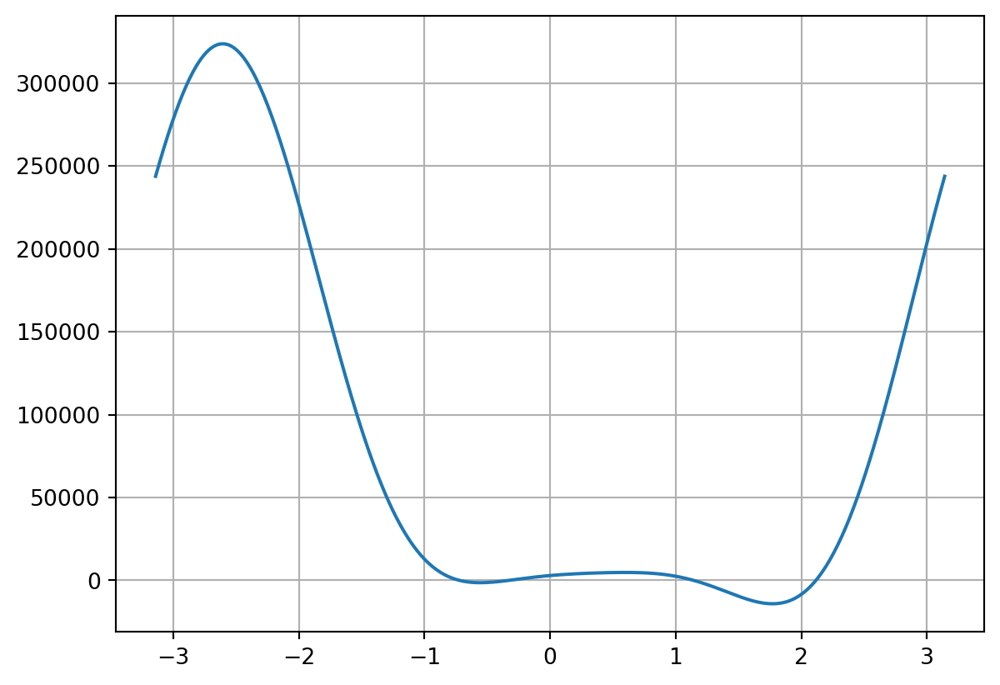
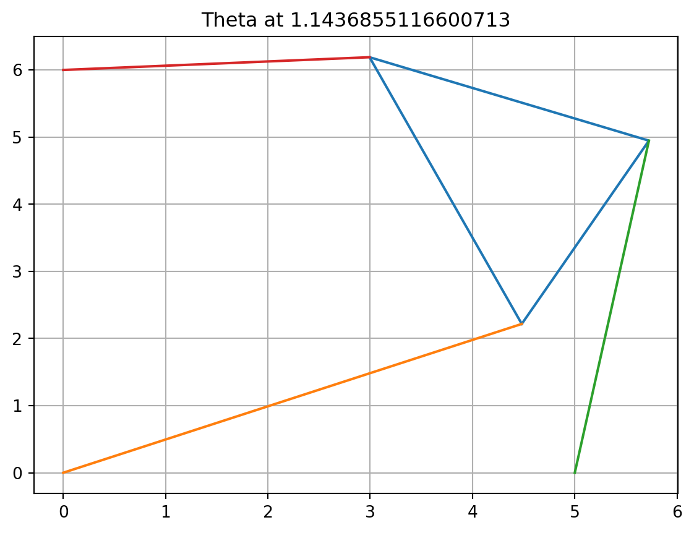
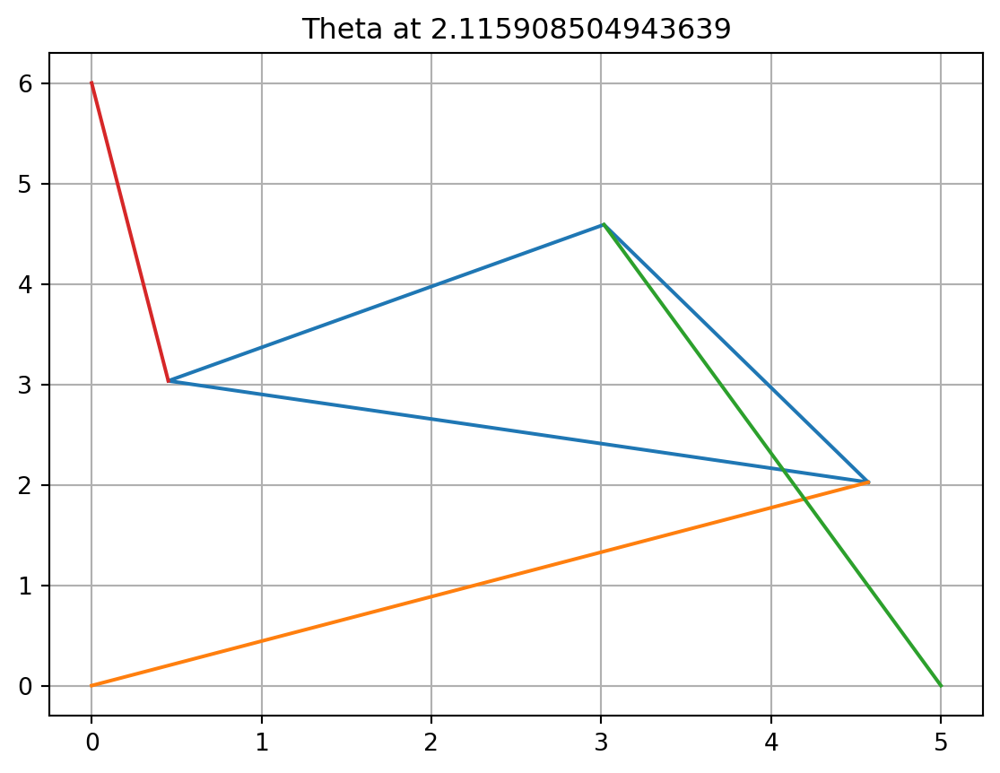

Reality Check 1, Stewart Platform in 2 Dimensions
Reality Check
Jenaveve White
Introduction
A Stewart platform is a versatile parallel manipulator characterized by six degrees of freedom, allowing for precise control of a mobile platform connected to a fixed base via six adjustable legs. Developed by Eric G. Stewart in the 1960s, these platforms can move freely in three-dimensional space, making them ideal for various applications, including robotics, flight simulators, medical devices, and aerospace testing. Their advantages include high precision, versatility in motion profiles, and a compact design, which enable them to effectively accommodate diverse payloads and operational requirements. Overall, Stewart platforms play a crucial role in advancing technology across multiple fields by providing sophisticated motion control solutions.
Question 1
Write a Python function for f(θ). The parameters \(L_1, L_2, L_3, \gamma, x_1, x_2, y_2 \text{ are fixed}\) constants, and the strut lengths p1, p2, p3 will be known for a given pose.
To write the function for f(θ) I created a function named f that takes in a parameter \(\theta\) and calculates f(θ). The parameters that are fixed were set to global variables and later called inside of my f function. From our text, we have relationships for our 2 dimension stewart platform as follows: \[ A_2 = L_3cos(\theta)-x1 \] \[ B_2= L_3sin(\theta) \]
\[ A_3 = L_2cos(\theta + \gamma) - x_2 \]
\[ B_3 = L_2sin(\theta+ \gamma) -y_2 \]
\[ D = 2(A_2B_3 - B_2A_3) \] \[ N_1 = B_3(p_2^2-p_1^2-A_2^2-B_2^2)-B_2 (p_3^2-p_1^2-A_3^2-B_3^2) \] \[ N_2 = -A_3(p_2^2-p_1^2-A_2^2-B_2^2)+A_2(p_3^2-p_1^2-A_3^2-B_3^2) \]
Using these equations, the function calculates \(N_1^2+N_2^2-p_1^2D^2\), which should output 0, if working correctly.
After creating this function, to ensure it is finding the roots correctly my code returned a value of .0000000000004, which for our purposes is essentially zero. This tells us that the function is working properly. The miniscule value is likely due to a computational rounding error, which is fairly insignificant.
Question 2
Plot f(θ) on [−π, π]. As a check of your work, there should be roots at θ = ±π/4.
To create this graph I used my created f() function to plot an array of 400 points on the interval [−π, π].
As seen below, my function is working properly, as roots can seen at θ = ±π/4.
Question 3
For question 3 we are asked to Reproduce Figure 1.15.
First step in creating these graphics was to create a triangle function that plots the points, struts, and triangle lines. The parameters of this function take in 6 point. First the three points on the triangle, then the three fixed nodes for the struts. After creating this function, I called it twice and passed in the appropriate points to replicate the figures.
My two triangle figures properly replicate those shown in figure 1.15 and plotted red triangles with the correct verticies, placed small blue circles at the strut anchor points, and plotted the struts.

Question 4a.
Solve the forward kinematics problem for the planar Stewart platform specified by x1 = 5,(x2, y2) = (0, 6), L1 = L3 = 3, L2 = 3√2, γ = π/4, p1 = p2 = 5, p3 = 3. Begin by plotting f(θ). Use an equation solver of your choice to find all four poses (roots of f(θ)), and plot them. Check your answers by verifying that p1, p2, p3 are the lengths of the struts in your plot.
My approach for this question was to use the secant method to solve for the root. This code was provided to us on our canvas page under the python functions.
The resulting thetas for the 4 distinct poses were -0.721, .0.331, 1.144, and 2.116

Question 4b.
For part 4b the four poses should be graphed.
For solving this question I created a function to graph the poses based on a value theta. I created a function which takes in theta and uses the formulas from the f function previously descibed, to plot the plots of the triangle and the struts with their fixed nodes.
Upon viewing these graphs, you can see that the proper theta values have been found, and that the graphs are producing the appropriate images.




Question 5
Change strut length to p2 = 7 and re-solve the problem. For these parameters, there are six poses
To approach this problem, I changed the global variable p2 to be set to 7. After doing so, I created the function plot with 400 points on the interval negative pi to pi. The six poses are related to the theta value found from the roots. These values are shown when the poses are graphed.
Along with the correct function graphed, there are the 6 unique poses and their theta values as the graph titles. The solution to this problem has been clearly shown through the following graphs.


Question 6
Find a strut length p2, with the rest of the parameters as in Step 4, for which there are only two poses.
For this question, I used a guess and check method. I found that for 2 poses, a strut length of 4 outputs the correct number of roots. After finding the correct p2 length, I ploted the theta function similarly to my past graphs. Along with the function, I have created two graphs that show the poses at the 2 thetas.
I believe that this properly displays a found strut length for which there are only two poses.

Question 7
Calculate the intervals in p2, with the rest of the parameters as in Step 4, for which there are 0, 2, 4, and 6 poses, respectively
To calculate the intervals for which there are 0,2,4, and 6 roots, I created a function that displays when value of our function f based on iterating through p2 lengths from 0 to 10 with a step of 0.01. From this function we can find where the zeros change from 0 zeros, to 2 zeroes, to 4 zeroes, to 6 zeroes, and then back down.
The results of this function shows that the intervals for 0 zeroes are [0,3.7199] and [9.2699, \(\infty\)]. The interval for 2 roots is [3.7199,4.8699] and [7.8499,9.2699]. The interval for 4 poses are [4.8699, 6.9699] and [7.0299, 7.8499]. The interval for 6 poses is [6.9699, 7.0299].
Below shows the answer the function has computed to give us the points in which the intervals with different number of poses.
0
3.7199999999999647
4.869999999999941
6.969999999999896
7.0299999999998946
7.849999999999877
9.269999999999847
0